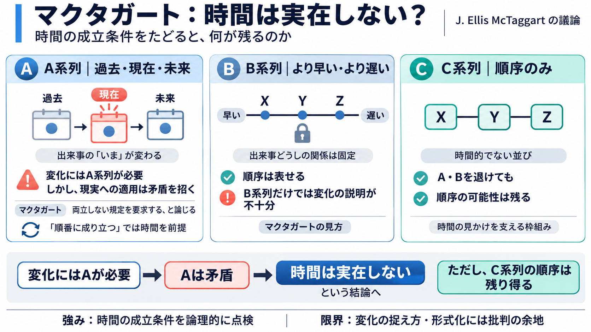

The Unreality of Time
at all, than when we say that everything passes through some entirely different present. Our conclusion, then, is that n…

at all, than when we say that everything passes through some entirely different present. Our conclusion, then, is that n…
# Mctaggart Headline: LEO at State of California Current role: LEO Seniority: Specialist, Other Location: Roseville, Ca…
# Mctaggart Headline: Associate Financial Advisor at Ameriprise Financial Services Current role: Associate Financial Ad…